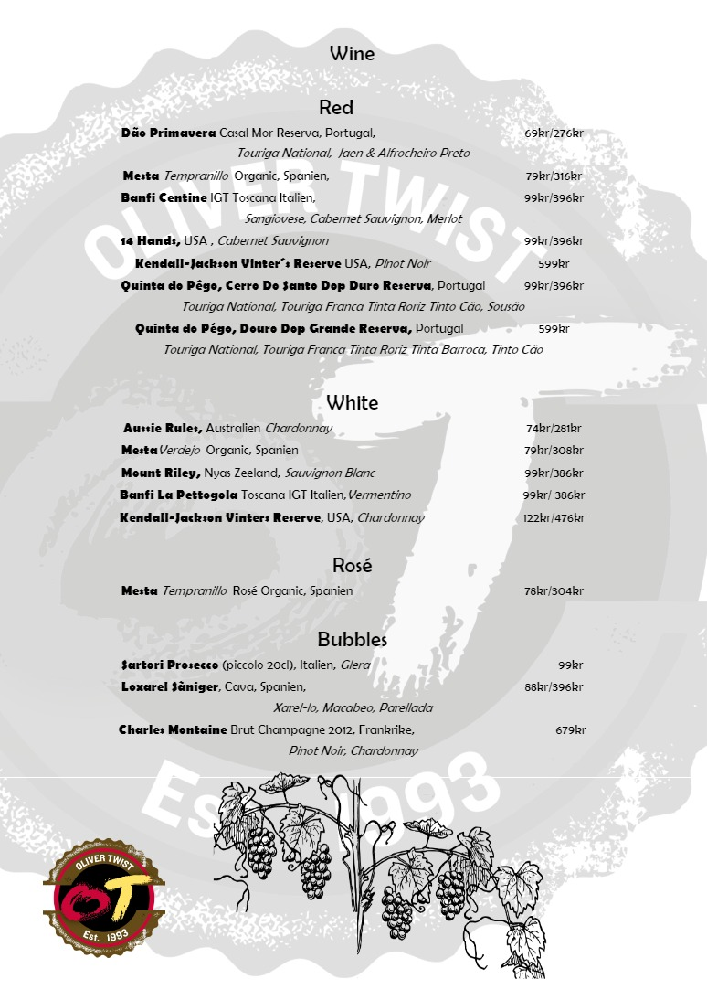

Beers on tap,
( Real Ales & Cider)
Dagens fatölsortiment finns att läsa på våra väggtavlor eller fråga personalen.
Vi serverar hantverksöl från främst svenska, amerikanska och brittiska
mikrobryggerier, men även öl från andra länder.
Real Ale är handpumpad färsköl som främst kommer från Storbritannien
men även från våra svenska mikrobryggerier.
Beer taps including cider and handpulls (Real Ales),
We serve craft beers mainly from the US, UK and local craft breweries.
The Real Ales are cask ales mainly from Great Britain and Sweden
Today ́s beers is written on our blackboards or you can always ask the staff.
Lager
Berliner Kindl Jubiläums Pilsener, 50cl, 4,8%
69kr
Dancing Bier, Magic Rock, 33cl 4,5%
72kr
Hedemora Dunkel, Oppigårds, 50cl, 5,3%
98kr
Hedemora Pilsner, Oppigårds, 50cl, 5,0%
98kr
Praga Dark Lager, 50cl, 4,5%
72kr
San Miguel, 33cl, 5% (Gluten Free)
66kr
San Miguel ECO, 25cl, 4,2%
51kr
Flasköl och Burköl
Pale Ale
Amarillo, Oppigårds, 33cl, 5,9%
77kr
Ankaruddens Aussie Pale Ale, Nynäshamns Ångbryggeri, 50cl, 5,1%
99kr
Dales Pale Ale, Oscar Blues, 35,5cl, 6,5% (Gluten Free)
78kr
Guyabera Citra Pale Ale, Cigar City, 35,5cl, 5,5%
79kr
High Wire, Magic rock, 5,5%, 33cl,
78kr
High Wire Grapefruit, Magic Rock, 33cl, 5,5%
78kr
Inhaler, Magic Rock, 33cl, 4,5%
76kr
Intergalactic, SthlmBrCo, 33cl, 4,8%
104kr
Lantöl Strong Pale Ale, Skebo Bruksbryggeri, 50cl, 5,4%
90kr
Monkey Business APA, Fjäderholmarnas Bryggeri, 33cl, 5,2%
82kr
Norn Pale Ale, Oppigårds, 33cl, 5,6%
82kr
Pale Ale, Samuel Smith, 55cl, 5,0%
104kr
Pale Ale, Sierra Nevada, 35,5cl, 5,6%
82kr
Passion Pale Ale, Poppels, 33cl, 5,2%
89kr
Suspended In Cans, Siren, 44cl, 4,0%
116kr
Amber Ale
Deep Roots, Three Weavers, 35,5cl, 5,2%
82kr
Bitter
Bedarö Bitter, Nynäshamns Ångbryggeri, 50cl, 4,5%
92kr
IPA, SIPA, DIPA, NEIPA m.m.
All Day IPA, Founders, 35,5cl, 4,7%
98kr
California IPA, Sierra Nevada,35,5cl, 4,2%
98kr
Cannonball IPA, Magic Rock, 33cl, 7,4%
86kr
Fantasma Gluten Free IPA, Magic Rock, 33cl, 6,5%
86kr
Futurist SIPA, Siren, 44cl, 4,8%(Gluten Free)
140kr
Hazie Dizzie NEIPA, Odd Island, 33cl, 6,2%
102kr
Hercules DIPA, Great Divide, 35,5cl, 10,0%
119k
India Ale, Samuel Smith, 35,5cl, 5,0%
104kr
Indianviken Pale Ale, Nynäshamns Ångbryggeri, 50cl, 6,2%,
96kr
Indian Tribute, Oppigårds, 33cl, 6,6%
79kr
Jai Alai, Cigar City, 35,5cl, 7,5%
86kr
Let The Night In Black IPA, Siren, 44cl, 6,2%
144kr
Middle Finger Discount IPA, Siren, 44cl, 7,2%
148kr
Modus Hoperandi IPA, Ska, 35,5cl, 6,8% (Gluten Free)
79kr
NEIPA, Poppels, Poppels, 33cl, 7,0%
98kr
New Sweden IPA, Oppigårds, 33cl, 6,2%
81kr
One
-
Y IPA, Oskar Blues, 35,5cl, 4,0%
74kr
Passion For You, Uppsala brygghus,33cl, 5,8%
100kr
Pulp Fission IPA, SthlmBr/Brewski, 44cl, 6,5%
136kr
Roughneck Rye IPA, Fjäderholmarnas Bryggeri, 33cl, 7,2%
89kr
Saucery Session IPA, Magick Rock, 33cl, 3,9% (Gluten Free)
69kr
Soundwave IPA, Siren, 33cl, 5,6%
86kr
Sthlm Session IPA, Fjäderholmarnas Bryggeri, 33cl, 4,5%
88kr
The Tickle Monster Triple IPA, Siren, 33cl, 11%
139kr
Thurbo DIPA, Oppigårds, 33cl, 8,5%
102kr
Titan IPA, Great Divide, 35,5cl, 7,1%
88kr
Twin Flames Red IPA, Siren, 44cl, 6,5%
144kr
Utah DIPA, Oppigårds, 33cl, 8,0%
99kr
Klassisk Belgisk stil
Alexander, Rodenbach, 33cl, 5,6%
110kr
Chimay Blue, 33cl, 9%
102kr
Chimay Dorée, 33cl, 4,8%
92kr
Chimay Grande Réserve 2018, 37,5cl, 10,5%
299kr
Chimay Red, 33cl, 7%
96kr
Chimay Triple, 33cl, 8%
99kr
Cuvée de Jacobins, 33cl, 5,5%
99kr
Drakberget Dubbel, Nynäshamns Ångbryggeri, 33cl, 7,0%
120kr
Dubbel Edge, the Edge, 33cl, 7,0%
96kr
Kvarnstranden Kvadrupel, Nynäshamns Ångbryggeri, 75cl, 11%
255kr
Orabelle Belgian
-
Style Ale, Great Divide, 35,5cl, 8,3%
89kr
St Bernadus Abt 12, 33cl, 10%
110kr
St Bernadus Tripel, 33cl, 8%
98kr
St Feuillien Blond, 33cl, 7,5%
110kr
Veteöl
Belgisk Wit, Poppels, 33cl 4,7%
74kr
Tap 1 Meine Helle Weisse, Schneider, 50cl, 5,2%
96kr
Tap 6 Mein Aventinus, Schneider, 50cl, 8,2%
108kr
Tap 7 Original, Schneider, 50cl, 5,4%
96kr
Suröl, Gose, Saison m.m.
Calypso, Siren, 33cl, 4,0%
79kr
Castilian Lemon & Honey Cheesecake, Siren, 44cl, 6,2%
127kr
Certatio Equestris, Avery, 35,5cl, 8,9%
159kr
Currantly, Hop Notch, 44cl, 5,4%
114kr
Framboise, Boon, 37,5cl, 5,0%
134kr
Framboise, Oud Beersel, 37,5cl, 5%
136kr
Geuze Mariage Parfait, Boon, 37,5cl, 8,0%
152kr
Gueuze 100% Lambic Bio, Cantillon, 37,5cl, 5,5%
189kr
Helios Farmhouse Ale, Victory, 65cl, 7,5%
169kr
Kriek, Boon, 37,5cl, 4,0%
156kr
Kriek Mariage Parfait, Boon, 37,5cl, 8,0%
179kr
Licks Licks Licks, SthlmBrCo, 33cl, 6,0%
136kr
Margarita Gose, Cigar City, 35,5cl, 4,2%
74kr
Organic Cherry, Samuel Smith, 35,5cl, 5,1%
89kr
Organic Raspberry, Samuel Smith, 35,5cl, 5,1%
89k
Organic Strawberry, Samuel Smith, 35,5cl, 5,1%
89kr
Oude Geuze Vieille, Oud Beersel 37,5cl, 6%
134kr
Oude Kriek Vieille, Oud Beersel 37,5cl, 5%
144kr
Pompelmocello, Siren, 44cl, 6,0%
124kr
Rosé de Gambrinus, Cantillon, 37,5cl, 5,0%
229kr
Salty Kiss, Magic Rock, 33cl, 4,1%
69kr
Selene Saison, Victory, 75cl, 7,5%
199kr
Skamalgam Ale, Ska, 50cl, 5,76%
329kr
Snake Legs, Siren, 33cl, 8,6%
99kr
Sour & Salt, Brekeriet, 33cl, 4,6%
99kr
Triple Virgin Cherries, Edge, 33cl, 7,7%
133kr
Wild Little Thing, Sierra Nevada, 35,5cl, 5,5%
106kr
Zard
-
Alu, Odell, 75cl, 6,8%
429kr
Barley Wine, Strong Ale m.m.
Barrel Runner BA Mosaic, Founders, 35,5cl, 11,1%
177kr
Bigfoot 2019, Sierra Nevada, 35,5cl, 9,6%
139kr
Bötet Barley Wine 2018, Nynäshamns Ångbryggeri, 25cl, 9,1%
149kr
Dirty Bastard, Founders, 35,5cl, 8,5%
106kr
Dubbel Ale, CHOC BEER, 75cl, 8,5%
299kr
Grand Cru, North Coast, 50cl, 12,9%
198kr
Jubel 2015, Deschutes, 65cl, 10,4%
499kr
Odyssey 009, Siren, 37,5cl, 11,7%
299kr
Old Guardian Barley Wine 2012, Stone, 65cl, 11%
299kr
Primal Cut Bourbon Aged, Siren, 37,5cl, 10,0%
249kr
Ristretto Negroni, Siren, 33cl, 6,7%
120kr
Twentieth Anniversary, North Coast, 50cl, 12,5%
199kr
Brown Ale
Brännskär Brown Ale, Nynäshamns Ångbryggeri, 50cl 5,3%
94kr
Porter & Stout
3 Bean Stout, Lervig, 33cl, 12,0%
152kr
Arbetarporter, Oceanbryggeriet, 33cl, 9,0%
126kr
Barrel Aged Caribbean Chocolate Cake, Siren, 33cl, 9,4%
189kr
Barrica 31, Edge, 33cl, 9,8%
186kr
Breakfast Stout, Founders, 35,5cl, 8,3%
129kr
Chocolate Cherry Yeti, Great Divide, 56,8cl, 9,5%
308kr
Coffee Porter, Great Divide, 35,5cl, 6,5%
109kr
Common Grounds, Magic Rock 33cl 5,4%
76kr
Dairyfreak, Magic Rock with Dixons Milk Ices, 33cl, 5,2%
92kr
Dark Arts Surreal Stout, Magic Rock, 33cl, 6,0%
79kr
Death by Caribbean Chocolate Cake, Siren, 33cl, 9,1%
159kr
Herrgårdsporter, Skebo, 50cl, 5,0%
90kr
Imperial Stout, Samuel Smith, 33cl, 7,0%
86kr
Mr Coco Barrel Aged Imperial Stout, Fjäderholmarnas Br, 33cl, 10,7%
188kr
Russian Imperial Stout, Poppels, 33cl, 9,5%
122kr
Taddy Porter, Samuel Smith, 35,5clcl, 5,0%
72kr
Thurbo Stout, Oppigårds, 33cl, 8,7%
98kr
Together & Apart Cascadian Dark Ale, Siren, 44cl, 6,2%
140kr
Yeti Imperial Stout, Great Divide, 35,5cl, 9,5%
99kr
Östersjö Porter, Fjäderholmarnas Bryggeri, 33cl, 6,5%
89kr
Cider & Stuff
Cloudy Dry Apple, Cocky Crane, 33cl, 4,5%
92kr
Crispy Apple, 33cl, Cocky Crane, 4,5%
82kr
Herrljunga Pear, 33cl, 4,5%
59kr
Sour Raspberry/Lemon, Cocky Crane ,
33cl, 4,5%
82kr
Crabbie ́s Ginger Beer, 33cl, 4,0%
78kr
Old Rosie, Westons, 33cl, 7,3%
88kr
Seltzer Hallon, Uppsala Brygghus, 33cl, 4,5%
78kr
Seltzer Krusbär & Lime, Uppsala Brygghus, 33cl, 4,5%
78kr
Stowford Press, Westons, 40cl, 4,5%, (Vår Cider på fat)
67kr
Less or no alcohol
Coca
-
Cola, Coca
-
Cola Zero, Fanta, Sprite
27kr
Drink ́in the sun, Mikkeller, 33cl, 0,3%
55kr
Dry Tonic Water, Franklin & Sons Ltd
27kr
Jever Fun Alkoholfreies Pilsener, 33cl
35kr
Kul Lager, Ocean, 33cl, 2,8%
36kr
Land I Sikte, NÅB, 33cl, 3,5%
55kr
Nordic Tonic, Blåbär, 20cl
27kr
Nordic Tonic, Extra Bitter, 20cl
27kr
Nordic Tonic, Gurka, 20cl
27kr
Pripps Lättöl, 33cl, 2,2%
25kr
Rio Pale Ale, Ocean, 33cl, 2,8%
36kr
Road Trip Pale Ale, Uppsala Brygghus, 33cl, 0,3%
29kr
Special Effects, Brooklyn, 35,5cl, 0,4%
38kr
Spinnaker Session IPA, NÅB, 33cl, 3,5%
55kr
Stowford Press Cider LA, 33cl, 0,5%
35kr
Tomat, Tranbär, Apelsin, 20cl
25kr
Ramlösa, 33cl
25kr
Smakis, (för de minsta)
10kr
Wine
Red
Dão Primavera
Casal Mor Reserva, Portugal,
69kr/276kr
Touriga National, Jaen & Alfrocheiro Preto
Mesta
Tempranillo
Organic, Spanien,
79kr/316kr
Banfi Centine
IGT Toscana Italien,
99kr/396kr
Sangiovese, Cabernet Sauvignon, Merlot
14 Hands,
USA ,
Cabernet Sauvignon
99kr/396kr
Kendall
-
Jackson Vinter ́s Reserve
USA,
Pinot Noir
599kr
Quinta do Pégo, Cerro Do Santo Dop Duro Reserva
, Portugal
99kr/396kr
Touriga National, Touriga Franca Tinta Roriz Tinto Cão, Sousão
Quinta do Pégo, Douro Dop Grande Reserva,
Portugal
599kr
Touriga National, Touriga Franca Tinta Roriz Tinta Barroca, Tinto Cão
White
Aussie Rules,
Australien
Chardonnay
74kr/281kr
Mesta
Verdejo
Organic, Spanien
79kr/308kr
Mount Riley,
Nyas Zeeland,
Sauvignon Blanc
99kr/386kr
Banfi La Pettogola
Toscana IGT Italien,
Vermentino
99kr/ 386kr
Kendall
-
Jackson Vinters Reserve
, USA,
Chardonnay
122kr/476kr
Rosé
Mesta
Tempranillo
Rosé Organic, Spanien
78kr/304kr
Bubbles
Sartori Prosecco
(piccolo 20cl), Italien,
Glera
99kr
Loxarel Sàniger
, Cava, Spanien,
88kr/396kr
Xarel
-
lo, Macabeo, Parellada
Charles Montaine
Brut Champagne 2012, Frankrike,
679kr
Pinot Noir, Chardonnay
Avec & lite sött
ABK6, VSOP, 40%
26kr/cl
Angostura 1919, 40%
24kr/cl
Bailey ́s, 17%
22kr/cl
Barceló Gran Anejo, 37,5%
22kr/cl
Busnel Pays D`auge VSOP 40%
22kr/cl
Cointreau 40%
22kr/cl
Disaronno, 28%
22kr/cl
D.O.M Benedictine, 40%
22kr/cl
Drambuie, 40%
24kr/cl
Grappa Amarone della Valpolicella,
Tommasi, 43%
36kr/cl
Kahlua, 20%
22kr/cl
Liqeur de poire au cognac, 38%
22kr/cl
Martell VS 40%
22kr/cl
Masi Grappa di Amarone Mezzanella, 50%
27kr/cl
Pear Brandy, Peach Street, 40%
31kr/cl
Rhum J.M VSOP, 43%
26kr/cl
Sambuca Ramazzotti, 38%
22kr/cl
Stänkare & lite starkt
Absolut Vodka, 40%
23kr/cl
Amaro Di Angostura, 35%
22kr/cl
Branca Menta, 28%
22kr/cl
Bäska Droppar 40%
22kr/cl
Fernet Branca 39%
22kr/cl
Gammel Dansk 38%
22kr/cl
Greenall ́s London Dry Gin, 37,5%
22kr/cl
Hernö Gin, 40,5%
26kr/cl
Ikon No13 in Flames Gin, 43%
25kr/cl
Modus Hoperandi Beerschnapps,
Peach Street, 48%
26kr/cl
Napue Gin, Kyrö, 46,3%
25kr/cl
OP Anderson Aquavit 40%
22kr/cl
Red Square Vodka, 37,5%
22kr/cl
Stockholms Bränneri Dry Gin, 40%
25kr/cl
Ardbeg Ten, 46%
32kr/cl
Balvenie Doublewood, 40%
28kr/cl
Colorado Straight Bourbon, 46%
31kr/cl
Cragganmore 12 yo, 40%
25kr/cl
Dalwhinnie 15 yo, 43%
26kr/cl
Elijah Craig
Kentucky Straight Bourbon, 47%
36kr/cl
Evan Williams
Kentucky Straight Bourbon, 43%
22kr/cl
Famous Grouse, 43%
22kr/cl
Glendronach 12 yo, 43%
26kr/cl
Glenkinchie 12 yo, 43%
25kr/cl
Glenmorangie 10 yo, 40%
26kr/cl
Highland Park 12 yo, 40%
26kr/cl
Jack Daniels, 40%
26kr/cl
Jameson, 40%
22kr/cl
Knob Creek, 50%
29kr/cl
Lagavulin 16 yo, 43%
34kr/cl
Laphroaig 10 yo, 40%
26kr/cl
Larceny,
Kentucky Straight Bourbon, 46%
31kr/cl
Macallan Fine Oak 12 yo, 40%
26kr/cl
Monkey Shoulder, 40%
24kr/cl
Oban 14 yo, 43%
28kr/cl
Rittenhouse Straight Rye Whisky, 50%
34kr/cl
Talisker 10 yo, 45,8%
26kr/cl
Talisker the Distillers Edition,
Double Matured in Amoroso Cask, 45,8% 32kr/cl
Teeling Whiskey Rum Casks, 46%
25kr/cl
Woodford Reserve, 43,2%
28kr/cl
Whiskey & Bourbon
